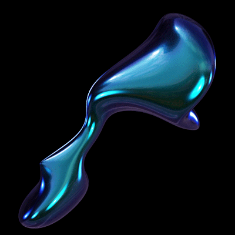

HABITS
Nudibranchs can be found in seas worldwide.
Their habitats range from the Arctic through to temperate and tropical regions, and to the Southern Ocean around Antarctica. They are almost entirely restricted to salt water, although a few species are known to inhabit lower salinities in brackish water.
Nudibranchs live at virtually all depths, from the intertidal zone to depths well over 700 m (2,300 ft). The greatest diversity of nudibranchs are seen in warm, shallow reefs, although one nudibranch species was discovered at a depth near 2,500 m (8,200 ft).
Nudibranchs are benthic animals, found crawling over the substrate. The only exceptions to this are: neustonic Glaucus , which float upside down just under the ocean's surface; Cephalopyge trematoides, which swim in the water column; and Phylliroe bucephalum.
Without shells, they have their own unique defense mechanisms.
*Aposematism is when animals advertise that they are not worth eating
Some have evolved an external anatomy with textures and colors that camouflage then amongst their prey, typically sponges or soft corals.
Other nudibranchs have an intensely bright and contrasting color pattern that makes them especially conspicuous in their surroundings.
This may not be an example of aposematism because there are few examples of mimicry, many species are nocturnal or cryptic, and bright colors camouflage well in deep waters.
However, there are still some nudibranch mollusks that are aposematically colored, like the Phylidiidae slugs from Indo-Pacific coral reefs.
Some also store the stinging cells of their prey in their cerata...
And all known nudibranchs are carnivorous!